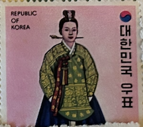
| SOURCE | TITLE| IMAGE MATCH | click to source page |
| Etsy | Vintage 1973 Republic of Korea Court Costumes of the Yi Dynasty Tan-gui Postage Stamp - Etsy | 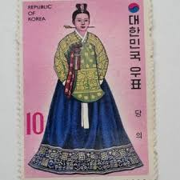 |
| Find Your Stamps Value | Value of 구글 흔적 남기기 최적화(TG:e10838).vyh stamps | 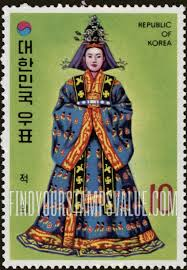 |
| eBay | Korea S Sets & All 10 S/S Clothes 1973 MNH-114,20 Euro | eBay |  |
| 1973 República de Corea-Traje Típico de Princesa de la Dinastía Imperial Yi | 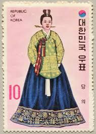 | |
| eBay | Hanbok for sale | eBay | 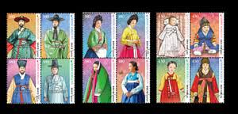 |
| Osta | h801 Lõuna-Korea 1973 õukonna kostüümid Mi 880-881 MLH sari (205260927) - Osta.ee | 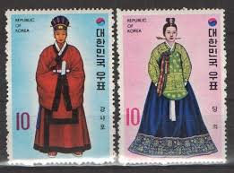 |
| Etsy | Republic of Korea - Etsy | 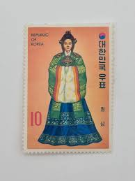 |
| Etsy | Vintage 1973 Republic of Korea Court Costumes of the Yi Dynasty Jok-ui Postage Stamp - Etsy | 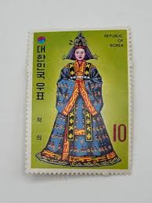 |
| Find Your Stamps Value | Value of princess Diana White Chiffon Evening dress stamps | 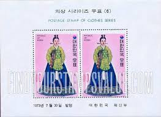 |
| eBay UK | Korea S Sets & All 10 S/S Clothes 1973 MNH-114,20 Euro | eBay UK |  |
| Etsy | South Korean Costume - Etsy | 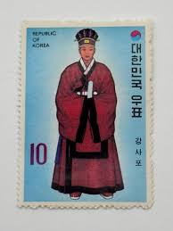 |
| Alamy | Postage stamp from South Korea in the Traditional Korean costumes (Yi dynasty) series issued in 1973 Stock Photo - Alamy | 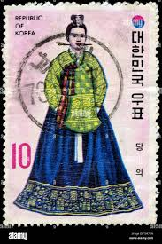 |
| A gorgeous Korean traditional costume , postage stamp | 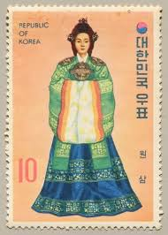 | |
| United Archives | ROK: letter stamp; traditional clothing edition | 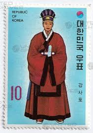 |
| Free stamp catalogue | Stamps with the theme Costumes - Freestampcatalogue.com - The free online stampcatalogue with over 500.000 stamps listed. | 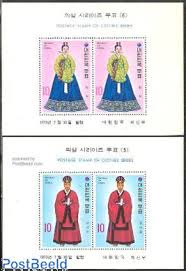 |
| Find Your Stamps Value | Value of king korn stamps |  |
| Welcome to korea stamp portal system | 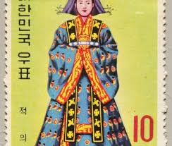 | |
| postbeeld.com | Stamp 1973, Korea, South Costumes 2v, 1973 - Collecting Stamps - PostBeeld - Online Stamp Shop - Collecting | 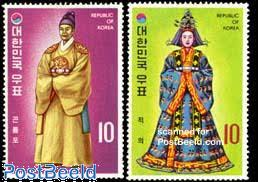 |
| eBay | Korea Stamp Scott# 860 Queen's Ceremonial Robe 1973 MNH L447 | eBay | 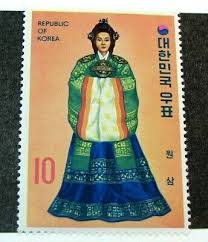 |
| eBay | Korea 1973 Vintage Set of 2 Postage Stamps (63) | eBay | 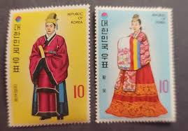 |
| Tripadvisor | 切手博物館10 - Picture of Korean Postage Stamp Museum, Seoul - Tripadvisor | 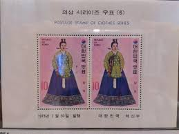 |
| Blogger.com | South Korea 2019 - The Style of Hanbok - stamp | 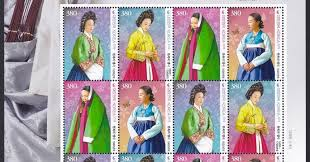 |
| Soon issue The style of the hanbok (korean traditional clothes) September 9 1. 1500S 2. 1600~ 1700S 3. 1800S 4. 1900S | 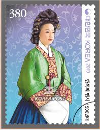 | |
| JetPunk | Guess the stamps by Country | 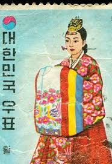 |
| US postage stamp. 1.25 cents. Palace of the Governors. Santa Fe, New Mexico. Issued 1954. Scott catalog 1031. |  | |
| eBay | Korea #859-68 MNH b23.8 512 | eBay | 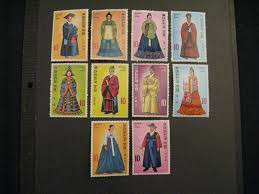 |
| Welcome to korea stamp portal system |  | |
| Korea Stamp - Korea's National Costume |  | |
| Welcome to korea stamp portal system | 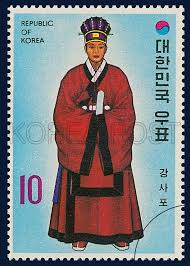 | |
| These were done as part of a tourism series it looks like. Hwal Ot means something along the lines of traditional Korean clothing. This is a woman in a wedding hanbok. #KoreanDesign # | 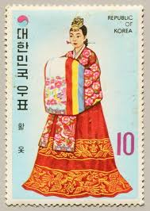 | |
| HipStamp | Korea-1973 Sc#859 Traditional Korean Costumes-King'S Robe MNH Block VF | Asia - South Korea, General Issue Stamp / HipStamp | 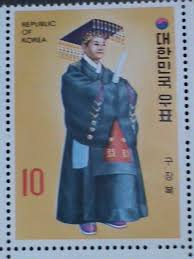 |
| eBay | Korea 1973 Traditional Clothes Costume Stamp Culture | eBay | 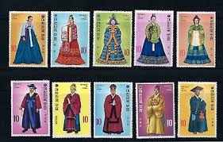 |
| eBay | S. Korea KPCC2763-6 Style of the Hanbok, Korean Traditional Costume, Butterfly | eBay | 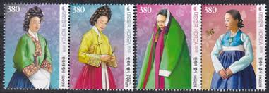 |
| eBay | Korea - 2016 Imperforated - MNH - (6299-6302) Traditional Costumes | eBay |  |
| Tripadvisor | 切手博物館7 - Picture of Korean Postage Stamp Museum, Seoul - Tripadvisor | 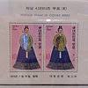 |
| 上衣 | 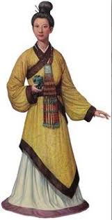 | |
| eBay | W KOREA 3652a-3654a TRADITIONAL WOMEN COSTUMES | eBay | 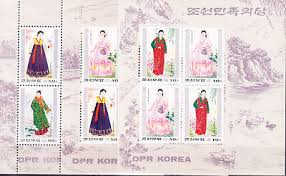 |
| Alamy | Postage stamp from South Korea in the series issued in Stock Photo - Alamy | 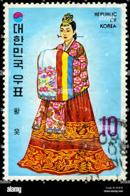 |
| The Diarist.ph | The day I wore the hanbok and learned more about the terno - The Diarist.ph | 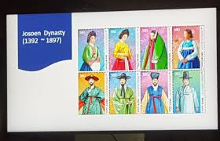 |
| Find Your Stamps Value | Value of 당일상조내구제@-카툑892jms stamps | 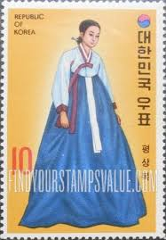 |
| eBay | Korean Traditional clothing,The Style of the Hanbok,Korea 2021 REG FDC,Cover | eBay | 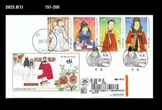 |
| Blogger.com | North Korea 2016 - National Costumes - stamp | 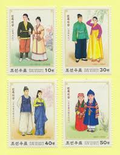 |
| eBay | Korean Traditional clothing,The Style of the Hanbok,Folkways,Korea 2019 block | eBay | 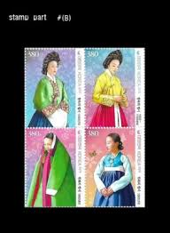 |
| eBay Australia | KOREA SCOTT # 859a68a SOUVENIR SHEETs VF MINT NEVER HINGED scott | eBay Australia |  |
| 33 South Korea-Postage stamps ideas | postage stamps, korea, south korea | 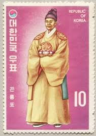 | |
| Oryu Goara Beach ⛱ in #Gyeongju, Gyeongsangbuk-do Province, has fine sand and pebbles perfect for families and friends to enjoy sea bathing. During the summer holidays, visitors can rent colorful tents to |  | |
| Darabanth Auction House | Lezárult 443. Gyorsárverés - Érmés és bankjegyes borítékok | Darabanth Kft. | 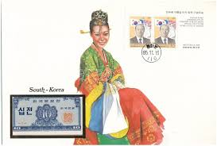 |
| eBay | S. Korea KPCC2891-4 The Style of the Hanbok, Korean Traditional Costume | eBay | 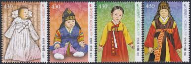 |
| stampsfac.com | NORTH KOREA - 1979 NATIONAL COSTUMES OF LI DYNASTY - 6V - CTO - Website Name | 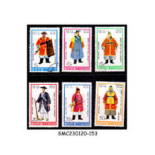 |
| eBay | Korea South 2019 "The Style of the Hanbok" Block | eBay | 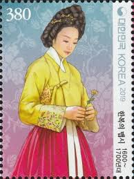 |
| X | Late Goryeo/early Joseon inspired. #Korea #hanbok #한복 | 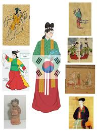 |
| Poppe Stamps | Poppe Stamps: North Korea - Korean People?s Democratic Republic, 1977, N1593, National Costumes, Seasons - stamps for sale by theme and country | 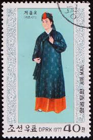 |
| 590 Folk Costume Stamps ideas | postage stamps, stamp, stamp collecting | 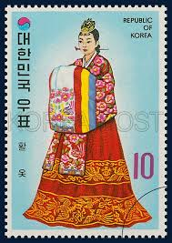 | |
| eBay | Korean Culture,traditional clothing,Hanbok,韓服,Korea 2021 REG FDC,Cover | eBay | 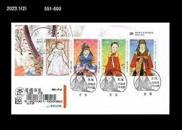 |
| Delcampe | Costumes - KOREA North 1600-1603,used,falc hinged | 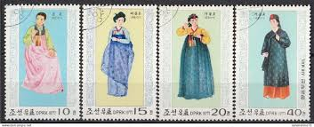 |
| I think Queen SeonDeok looks fine: A rebuttal to u/rtil : r/civ | 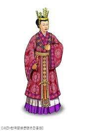 | |
| eBay | 35766] Korea 1973 Clothes Costumes Variety Broken 0 in OF clothes S/S MNH | eBay | 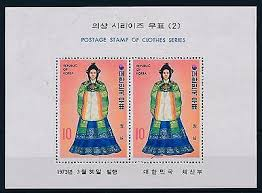 |
| Alamy | Korean postage stamp hi-res stock photography and images - Page 2 - Alamy | 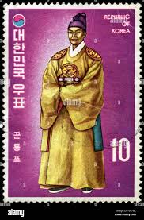 |
| HipStamp | North Korea 1977 - FDI - Scott #1558 | Asia - North Korea, General Issue Stamp / HipStamp | |
| 연합뉴스 | Hanbok stamps | Yonhap News Agency |